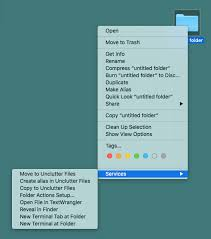

this is plain text
this is italicized text
this
is bold text
this is text inside a div
this is text inside a span
this is text
this is a link
around the link

go to page 2

 go to page 2
go to page 2